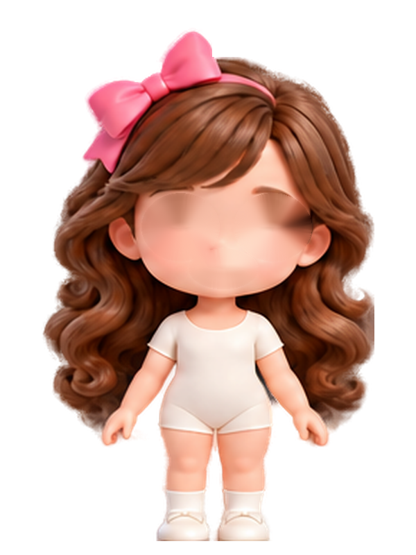
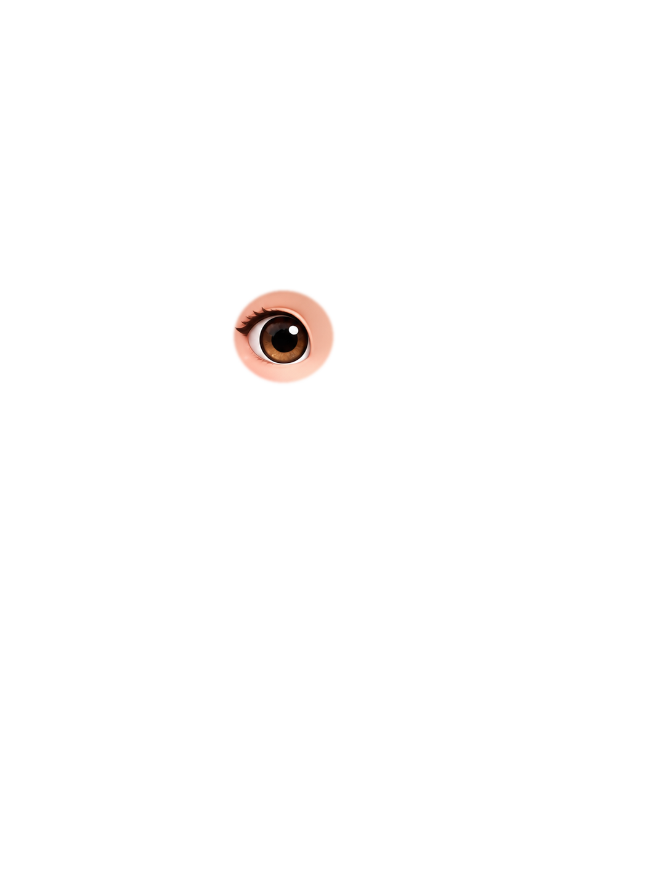
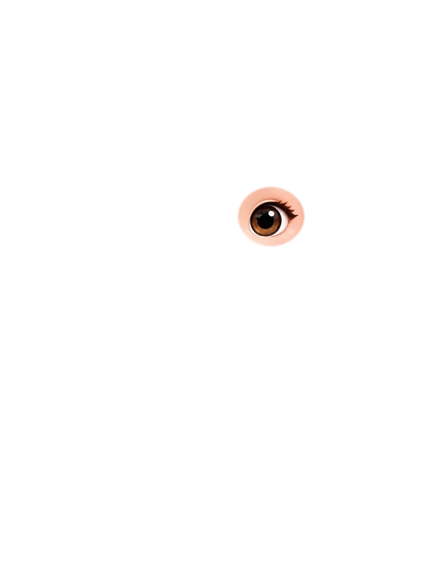
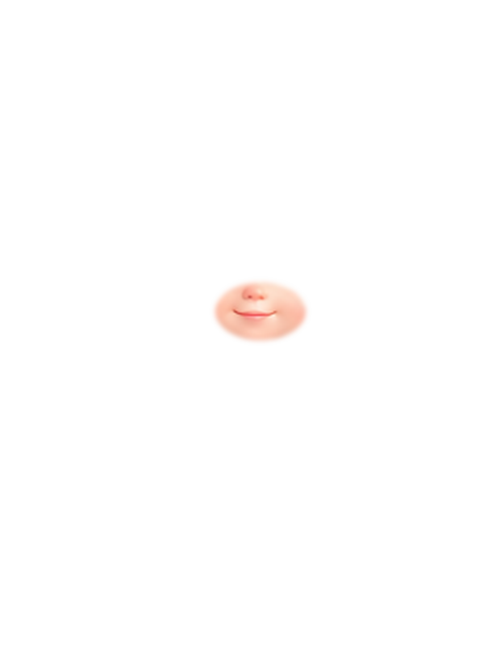
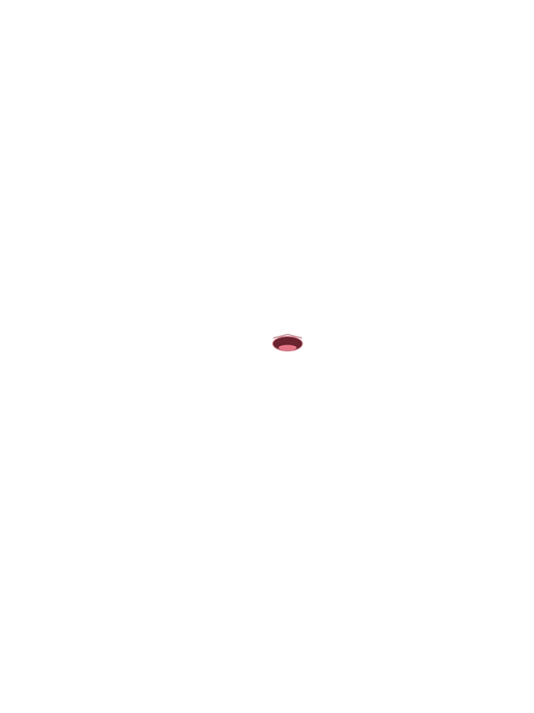

Riki’s real layered face
One fixed doll. The eyes and mouth are separate transparent pieces aligned to the same canvas.






What changed: her body, hair, head, and lighting never switch images. Only a small mouth layer changes while she speaks, and only the eye layer changes when she blinks.